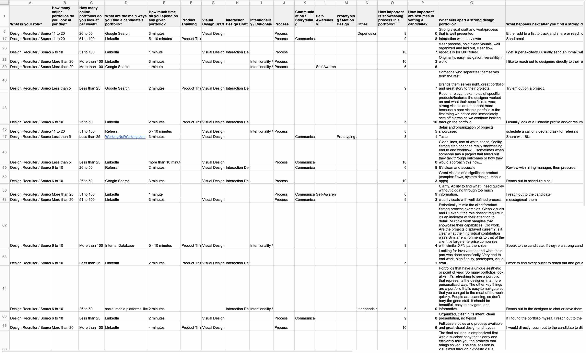
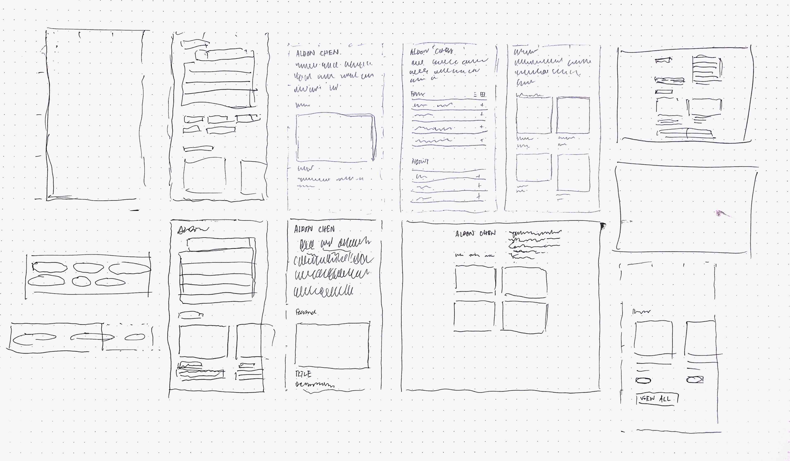

Designed and developed using plain HTML/CSS/JS by Aldon Chen.
Aldon Chen
aldonchen.com

Summary
Problem: I needed a website that would accurately summarize the multidisciplinary nature of my work while also appealing to a wide audience spanning from graphic designers to academics.
Goal: Design and develop a personal website that would appeal to the widest audience possible on a wide variety of screens, in addition to allowing ease of maintanence from my end when adding and modifying content.
Solution: A website primarily revolving around modular collapsible content containers, allowing for content flexibility, ease of maintanence in both layout and development, and scalability.
Process
Garron Engstrom's data on the portfolio reviewing behaviors of recruiters and managers.
Key Takeaways
80% of recruiters say they spend 3 minutes or less on a candidate’s portoflio.
54% of Design Managers spend 5-10 minutes on a candidate portfolio, while another 11% spend more than 10 minutes.
Functionalist, utilitarian, minimalistic are some words that would describe this website.
Font Family: Inter by Ramsus Andersson.

You're experiencing the website right now!